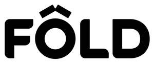

Trade Mark Journal No.2025/030 25 July 2025
UK00004216349 9 June 2025 (9,27,28,37,41)
Mark 1

Mark 2
- Class 9
- Downloadable software; Downloadable computer software; Downloadable application software; Computer software for assisting in the design of sports equipment; Software relating to fitness training, weight training, health, yoga or pilates; Software related to the instruction of weight training, fitness training, yoga or pilates; Software for selecting, recording or monitoring yoga or pilates exercises or user data relating to yoga or pilates exercises ; Electronic sports training simulators [computer hardware and software-based teaching apparatus]; Software for selecting, recording or monitoring fitness or weight training exercises or user data relating to fitness or weight training exercises; Mobile application software; Downloadable mobile applications; Educational mobile applications; Mobile applications relating to fitness training, weight training, health, yoga or pilates; Mobile applications relating to the instruction of weight training, fitness training, yoga or pilates.
- Class 27
- Yoga Mats .
- Class 28
- Appliances for gymnastics; Sporting articles; Sporting articles and equipment; Gymnastic and sporting articles; Bags adapted for sporting articles; Sporting and physical exercise equipment; Bags adapted for carrying sporting articles; Cases adapted for carrying sporting apparatus; Pilates toning balls; Yoga swings; Yoga blocks; Yoga straps; Yoga wheels; Gym balls for yoga; Fitness exercise machines; Pilates exercise machines; Exercise reformers; Indoor fitness apparatus; Apparatus for achieving physical fitness [for non-medical use] .
- Class 37
- Maintenance and repair of gymnastic and sporting articles; Maintenance and repair of sports and fitness equipment .
- Class 41
- Tuition in gymnastics; Gymnastics instruction; Organising gymnastics events; Instruction in gymnastics; Gymnastics events (Organising of -); Gymnastics displays (Organising of -); Sporting activities; Sporting services; Sporting education services; Sporting event organization; Organising sporting events; Sporting and cultural activities; Organization of sporting events; Organising of sporting events; competitions and sporting tournaments; Sporting and recreational activities; Organising of sporting activities and of sporting competitions; Production of sporting events; Organising of sporting contests; Organisation of sporting competitions; Organising of sporting events; Sporting competitions (Arranging of -); Organising community sporting events; Instruction in sporting activities; Provision of sporting facilities; Entertainment; sporting and cultural activities; Club sporting facilities (Provision of -); Provision of sporting club facilities; Providing information about sporting activities; Provision and management of sporting events; Organising of sporting activities or competitions; Entertainment services relating to sporting events; Organizing community sporting and cultural events; Organisation of sporting competitions and sports events; Education and training services; Educational and training services relating to sport; Educational and training services relating to healthcare; Health club [fitness] services; Health club services [exercise]; Health club services; Health and fitness club services; Health club services [health and fitness training]; Education services relating to health; Providing health club and gymnasium services; Conducting pilates classes; Pilates instruction; Yoga instruction; Training in yoga; Education services relating to yoga .
FOLD Reformer Ltd